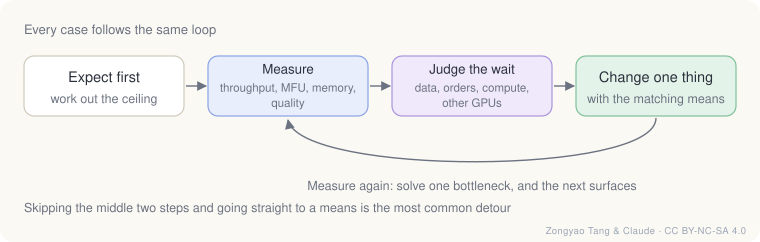
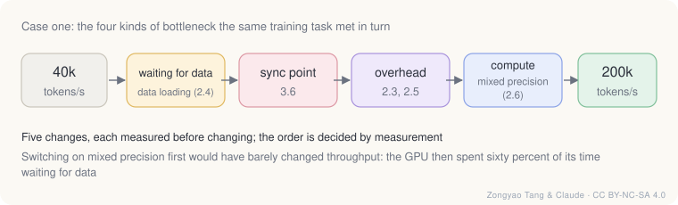
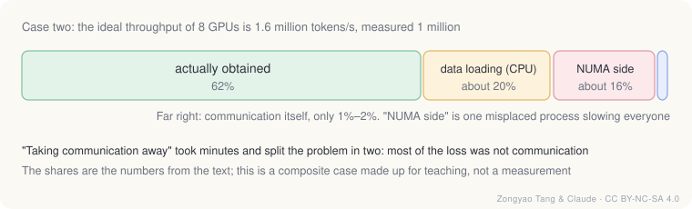
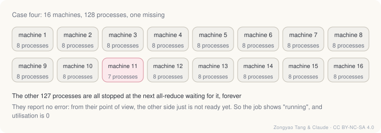

This unit teaches nothing new; it puts the earlier knowledge to use. The thread: first revisit the three principles of troubleshooting (ask what it is waiting for, work out the ceiling first, change one thing at a time) → then walk through four cases, from one GPU to many machines, from "slow" to "hung", each moving forward in the same order, with the unit used at each step marked. While reading the cases, before looking at the next step, try to think for yourself: what should be checked now? The hands-on project at the end is optional, suited to a second pass through the course.
Part 11 · Capstone project11.1 Capstone project
Translated by AI (Anthropic's Claude) from the Chinese edition. The Chinese original is the reference.
This unit answersCan you complete, on your own, a full loop of "measure → analyse → optimise → verify"?
Ties the whole course together: every step uses the principles of some earlier unit.
- First ask "what is it waiting for", then choose the means
- Work out the theoretical ceiling first, to know how far there is to go
- Change only one thing at a time, and leave data behind every time
- Case one: single-GPU training, GPU utilisation only forty percent
- Case two: 8 GPUs, only 5 times the speed
- Case three: after switching to a new batch of machines, multi-machine training is three times slower
- Case four: training stops moving in the middle of the night
Explanation
1First ask "what is it waiting for", then choose the means
The whole course can be gathered into one table: compute-bound → Tensor Cores, low precision; bandwidth-bound → fusion, tiling, quantisation; overhead-bound → torch.compile, CUDA Graphs, fused optimizers; communication-bound → buckets and overlap, adjusting the forms of parallelism; memory-bound → ZeRO/FSDP, recomputation, KV cache management.
Gather the whole course into one table. On the left are the four waits of 0.1, plus the case of not having enough memory; on the right, the matching means and the units that cover them.
What the GPU is waiting for How to recognise it Means Units Data Sawtooth utilisation; throughput jumps when fed a fixed batch More workers, pinned memory with async copies, preprocessing done in advance 2.4, 7.4 Orders (overhead) Doubling the batch barely changes the time; CPU time far exceeds GPU time Larger batches, torch.compile, CUDA Graphs, fused optimizers, removing synchronisation points 2.3, 2.5, 2.6, 3.6 Compute: arithmetic GPU fully loaded, time concentrated in matrix multiplication Low precision and Tensor Cores, rounding dimensions to good sizes 1.5, 2.6, 4.5 Compute: bandwidth GPU fully loaded, time in small element-wise operators or attention's reads and writes Fusion, Flash Attention, quantisation 4.2, 4.4, 9.2 Other GPUs (communication) Fine on one GPU, poor scaling efficiency on many Buckets and overlap, checking communication's road, adjusting the layering of parallelism Parts 5–7 Not enough memory OOM, or the batch cannot be made large Tell the five accounts apart; ZeRO/FSDP, recomputation, KV cache management 2.1, 7.2, 9.1 How to use this table. When you get a problem, do not start with "which optimisation methods do I know", but with "what is it waiting for right now". Get the judgement on the left right, and only two or three options are left on the right.
The most common detour is skipping the left side: hearing that torch.compile speeds things up and switching it on, hearing that mixed precision is good and switching to it, then finding nothing changes. Nothing changing does not mean these means are bad; it means what they tackle is not your bottleneck.
The bottleneck moves. Solve one, and the next one surfaces (the first idea of 0.1). So this table is not consulted once and done, but a loop: measure, judge, change, measure again. What it is waiting for may be different every round. Case one below shows this: the same training task met three different waits in turn.

How to use this table: it is a loop, not a single lookup An analogyLike seeing a doctor: diagnose first, then prescribe. Illnesses with the same symptoms may have completely different causes.
So for every optimisation in the project, first use the profiler and estimates to show which kind of bottleneck it is, then give the reason for choosing this means.
- Knowing what it is waiting for, you also need to know "what it should look like once it is fixed".
2Work out the theoretical ceiling first, to know how far there is to go
Estimate the computation of training with 6N, the speed of generation with "bytes of weights ÷ bandwidth", the time of an all-reduce with "2 × data size ÷ bandwidth". Compare the measured value with the theoretical one, and you know how much room is left.
Without an expectation, a measured number means nothing. Is "90,000 tokens a second" good or bad? Is "an all-reduce busbw of 20 GB/s" normal? You need a "what it should be" first, to judge how large the gap is and whether it is worth looking into.
The rulers in the course.
To estimate Estimate Unit Training computation About 6N floating-point operations per token 1.5 Ceiling on training throughput Hardware peak compute ÷ 6N; measured ÷ ceiling = MFU 0.2 Ceiling on single-user generation speed Memory bandwidth ÷ bytes of model weights 4.1 Memory taken by model state Mixed precision with Adam: 16 bytes per parameter 7.2 Size of the KV cache 2 × layers × hidden dimension × sequence length × bytes 4.1, 9.1 Time of one all-reduce About 2 × data size ÷ link bandwidth, plus steps × fixed latency 6.1 Expected communication bandwidth NVLink inside a machine, the network card across machines 5.1, 6.3 Copying from main memory to GPU memory Data size ÷ PCIe bandwidth 5.1 Checkpoint interval √(2 × time of one save × mean time between failures) 7.4 These estimates are all rough, and can be off by twenty or thirty percent. Their use is not to give exact numbers but to tell apart three situations:
- Off by ten or twenty percent: already close to the ceiling. Optimising further here takes a lot of effort for little return. Time to look at another bottleneck, or accept things as they are.
- Off by about double: one specific factor is not in place (half the resources unused, an extra copy, some stretch not overlapped). Worth finding.
- Off by an order of magnitude: something is fundamentally wrong, the road is wrong (fallen back to TCP, data loading completely serial, some capability of the GPU not used). Usually also the easiest to find, because the gap is so obvious.
Estimates can also veto infeasible plans in advance. "Train this model on 8 GPUs within a week": 6N times the number of tokens divided by 8 GPUs' compute; if it works out that MFU would have to reach 150%, the plan can be changed before you start.
Make it a habit: before taking any measurement, write down on paper the number you expect. If the measurement is far from the expectation, either the system has a problem or your understanding does. Both are worth getting to the bottom of.
An analogyLike running: only knowing your limiting pace tells you whether today's run was good, and whether more training is still worthwhile.
So when you are only ten or twenty percent from the ceiling, stop and attack another bottleneck; when you are still several times off, some basic problem usually has not been solved.
Builds on Training each token takes about 6N floating-point operationsWhen generating one word, matrix multiplication degenerates into matrix times vectorRing all-reduce: however many GPUs there are, each GPU's traffic barely changesMFU: what percentage of the hardware's peak compute you actually useFirst work out "what it should be", then see how far the measurement falls short- With a direction and an expectation, what is left is the discipline of doing the work.
3Change only one thing at a time, and leave data behind every time
Change only one variable at a time, and record throughput, memory and error before and after the change; write the results into your notes, and let the learning assistant help you check whether the reasoning holds up.
Why change only one thing. Performance problems have a huge number of variables: batch size, precision, compilation, number of workers, dozens of environment variables, versions of drivers and libraries. Change three things at once and throughput rises by 20%, and you do not know:
- which one had the effect;
- whether one of them raised it by 40% and another dragged it down by 20%;
- which to keep next time, in a different environment.
Worse is when the result gets worse: which of the three broke things can only be found by going back and retrying them one by one, which takes more time than doing them one at a time from the start.
A proper record.
- What was changed (only one thing).
- The four numbers before and after (0.2): throughput, MFU, peak memory, model quality.
- The conditions of measurement: how many warm-up steps were skipped, how many steps were measured, how large the fluctuation is.
- The environment: hardware, software versions, key settings.
- Your explanation: why this change happened, and which principle of the course it corresponds to.
The last item is the easiest to leave out, and the most valuable. An improvement you cannot explain is not to be relied on: it may be measurement fluctuation, or it may depend on some condition you were not aware of, and disappear in a different environment.
Also verify nothing was computed wrongly. 4.1 set the rule: compare every optimisation with "the correct version". At the level of training, that means checking against the loss curve (1.3): after the change, the curve should essentially coincide with the one before. Throughput up but the loss curve worse is not an optimisation; it is swapping one problem for another.
Keep the records where they can be seen. This app's notes are for exactly this: in each unit's notes, record the numbers you measured in your own environment (such as the communication baseline 6.3 recommends). The next time training gets slower, measure again and compare with your notes, and within minutes you know which stage has regressed. Without a baseline, the same problem has to be investigated from scratch.
The same applies to troubleshooting faults. The layer-by-layer elimination of 6.3 and the halving of 5.3 are both systematic ways of "changing only one condition at a time". When a problem comes up, the most natural urge is to try several possible fixes at once, and then the problem is "fixed" without your knowing why. When it comes back, you still will not know.
An analogyLike doing an experiment: change three conditions at once, and even if the result gets better you do not know which one did it.
So every conclusion in the report needs before-and-after numbers, and has to correspond to a unit of the course.
- That is the three principles. Now walk through them with four cases. The first is the most common, and shows best that "the bottleneck moves".
4Case one: single-GPU training, GPU utilisation only forty percent
A medium-sized model trains on one GPU, and nvidia-smi shows utilisation around 40%. Following "measure first, then break it down, find the biggest part", three different bottlenecks were found and solved in turn: data loading, a synchronisation point at every step, and operators too fragmented. Only once each was solved did the next one appear.
Symptoms. A Transformer of around 100 million parameters, batch 64, on one A100.
nvidia-smiutilisation jumps between 30% and 50%, and throughput is 40,000 tokens a second.Step zero: an expectation and a baseline first (0.2). By the 6N estimate, this GPU's theoretical ceiling is on the order of several hundred thousand tokens a second. The measurement is only about a tenth of the ceiling: off by an order of magnitude, which means a fundamental problem, not something that needs fine-tuning. Record the baseline: throughput, peak memory, the loss curve of the first 200 steps.
Step one: look at the shape of utilisation (0.2). Sampling once a second shows an obvious sawtooth: a second or two near 100%, then a second or two very low. A sawtooth points to "waiting for data".
Step two: verify (2.4). Take one batch and feed it over and over, without reading new data. Throughput jumps from 40,000 to 70,000. Data loading is confirmed as the bottleneck, and we also know the ceiling once it is removed is 70,000.
Check the DataLoader:
num_workers=0. Tokenisation is still inside__getitem__. Change both: tokenise in advance and store it in files (the last card of 2.4), set the number of workers to 8, and switch onpin_memoryandnon_blocking.Measure again: throughput 60,000. The sawtooth is gone, but utilisation holds steady at about 70%, still some way short of the 70,000 of "a fixed batch", and further still from the theoretical ceiling.
Step three: break down the time of one step (0.2). Capture a few steps with the profiler. At the end of every step the CPU has a wait of a few milliseconds, corresponding to
aten::item. The training loop callsloss.item()and writes a log line at every step. This is a synchronisation point (3.6): at every step the CPU stops and waits for the GPU to empty its queue.Change it to accumulate on the GPU and fetch the value once every 50 steps. Measure again: throughput 68,000, close to the fixed-batch level. Neither data nor the synchronisation point is a problem any more.
Step four: what is it waiting for now. Utilisation is in the 80s, no longer a sawtooth but steadily medium-high. The profiler's totals: CPU time is about the same as wall-clock time, and GPU time is only seventy percent of it. On the timeline, the GPU row is a mass of very short blocks. Do the batch-doubling test (2.3): from batch 64 to 128, the time per step rises by only 30%. This is "waiting for orders": the model is not large, the operators are very fragmented, and the CPU cannot issue them fast enough.
Two means: raise the batch to 128 (memory allows it); switch on
torch.compile(2.5). Do the first, and throughput is 100,000; then the second, and after skipping the few dozen seconds of compilation it settles at 130,000. UseTORCH_LOGS=graph_breaksto confirm there are no graph breaks on the hot path.Step five: look once more. Utilisation above 95%. The profiler shows the bulk of GPU time is in matrix multiplication. Only now does "compute" come up: check whether mixed precision is on (2.6). It is not. Switch on bf16 autocast: throughput 200,000.
Work out MFU: 6 × 10⁸ × 2×10⁵ = 1.2×10¹⁴, about 120 TFLOPS, divided by 312, about 38%. For a model of this size that is already a good level, and it is fine to stop.
At every step the loss curve was checked (1.3): when the batch was changed the learning rate was adjusted to match, and for the other changes the curves before and after coincided.
Looking back. Throughput went from 40,000 to 200,000 through five changes, corresponding to four different kinds of bottleneck: data (2.4), a synchronisation point (3.6), the overhead of issuing orders (2.3, 2.5), compute (2.6). Had mixed precision been switched on at the very start, throughput would hardly have changed, because at that time the GPU spent sixty percent of its time waiting for data. The order is decided by measurement, not by "which means sounds impressive".

The starting point, the end point and the four kinds of bottleneck met along the way An analogyLike clearing a channel silted up in several places: clear the furthest upstream, and the water slows again at the next. It has to be done one place at a time, and after each one you have to look again at where the water has got to.
So do not expect one change to solve every problem, and do not decide the direction is wrong when the first change achieves little. Bottlenecks surface layer by layer.
Builds on Change only one thing at a time, and leave data behind every timeThe easiest optimisation: preprocessing that can be done in advance should not wait until trainingSynchronisation points: whenever the CPU needs an actual value from the GPU, it must stop and waitThis path costs several microseconds every time; when the model is small and its operators fragmented, it becomes the bottleneckCompilation fights overhead and bandwidth, not computeautocast: one more stop on the way of each operator call, choosing the precision by the kind of operatorSplit the time of one step: how much each stage takesUsed later in Case two: 8 GPUs, only 5 times the speed- One GPU is tuned; move to many. This is the situation you are most likely to meet at work.
5Case two: 8 GPUs, only 5 times the speed
Training already tuned on one GPU is moved to an 8-GPU machine, and throughput is only 5 times that of one GPU, a scaling efficiency of 62%. Investigation found the loss came from two places: the 8 processes' data loading competing for the CPU, and one GPU, placed on the wrong NUMA side, slowing everyone down. Communication itself was not the problem.
Symptoms. The training of case one, 200,000 tokens a second on one GPU. Put on the 8 GPUs of the same machine with DDP, with the per-GPU batch unchanged, total throughput is 1,000,000. The ideal is 1,600,000, an efficiency of 62%.
Step one: take communication away (the troubleshooting of 7.1). The 8 processes each train independently, without synchronising gradients. Each process gets 160,000 a second, not 200,000. Without any communication at all, twenty percent is already lost. At least part of the problem has nothing to do with communication.
Look at the CPU: the machine has 64 cores, each of the 8 processes opened 8 workers, and with each one's main thread and pinning thread on top, the cores are all taken. Go back to the method of 2.4 and sweep the number of workers again with all 8 processes running at once. Because tokenisation is already done in advance, data loading is very light, and 3 workers per process are enough. After the change, each process running independently is back to 195,000.
Step two: add communication back, and estimate how much it should take (6.1, 6.3). The model has 100 million parameters, so the gradients in 16 bits are 0.2 GB. This machine's
all_reduce_perfmeasures a large-message busbw of about 200 GB/s on 8 GPUs, which converts to an algbw of about 114 GB/s. One step's gradient synchronisation takes about 2 milliseconds. One step's total time is about 200 milliseconds. Communication is only 1%, and most of it can overlap the backward pass too.Conclusion: communication should not cause any visible loss. Yet with DDP added back, total throughput is 1,260,000, an efficiency of 79%, another twenty percent below running independently. This twenty percent does not look like communication itself.
Step three: find the slow node (7.1, 6.3). Record for each process the time spent "waiting for synchronisation" in each step. Seven processes wait thirty-odd milliseconds per step; only the process on GPU 5 hardly waits at all. It is the one everyone is waiting for.
Run GPU 5 alone: 165,000 a second, slower than the other GPUs. Rule out hardware:
nvidia-smi -qshows no throttling, and the temperature is normal. Look atnvidia-smi topo -m(5.1): GPU 5 belongs to the second NUMA node; then look at which cores this process actually runs on: the first NUMA node. When binding CPU cores to each process, the start script used a hard-coded list, and process 5 was bound to the other side. At every step its data has to cross the interconnect between the two CPU sockets, and the CPU issues orders more slowly too.Fix the binding, so that each process uses the cores on the side of its own GPU. GPU 5 alone is back to 200,000. Total throughput of 8-GPU DDP is 1,520,000, an efficiency of 95%.
Step four: is the remaining 5% worth chasing. By the principle of the second card, within ten or twenty percent it is time to stop. But the timeline can confirm what it is: a short stretch of all-reduce alone after the backward pass ends (the last one or two buckets exposed), plus communication channels occupying some compute units (6.2). Normal overheads.
Looking back. Of the 38% lost: about 20% was data loading competing for the CPU (2.4), about 16% was one slow process with the wrong NUMA placement dragging everyone down (5.1, 7.1), and communication itself was only 1%–2%. The step of "taking communication away" took only a few minutes, yet split the problem in two and avoided diving headlong into tuning NCCL.

Where the ideal 1,600,000 went Every number used in this case (algbw, waiting time, NUMA membership) came from a command covered earlier. What really did the work was the order.
An analogyLike eight people rowing a boat: when the boat will not go faster, it is not necessarily the oars (communication); someone may not have eaten enough (data), or one person may be half a beat behind, with the other seven waiting for them at every stroke.
So when multi-GPU scaling efficiency is low, do not suspect communication first. First take communication away and see whether each process runs normally alone; then estimate how much communication should take; only then look at communication itself.
Builds on Case one: single-GPU training, GPU utilisation only forty percentScaling efficiency: multi-GPU throughput ÷ (single-GPU throughput × number of GPUs)Two bandwidths: algbw is what you experience, busbw is for comparing with the hardwareNUMA: processes, memory and devices should be on the same sideWhich station of the pipeline each argument tunes- The first two cases were inside one machine. Across machines there is a whole extra layer that can go wrong: the network.
6Case three: after switching to a new batch of machines, multi-machine training is three times slower
The same job with the same image, scheduled onto a different batch of nodes, runs at only a third of its former throughput. Inside a single machine everything is normal. Checking from the bottom up along "link → bare RDMA → NCCL → framework" found that NCCL was not using GPUDirect RDMA on the new nodes, and two of the nodes had even fallen back to TCP.
Symptoms. An FSDP job on 4 machines with 32 GPUs, formerly 1.2 seconds per step. After the cluster was expanded it was scheduled onto 4 new nodes, and takes 3.5 seconds per step. Code, image and configuration are all unchanged.
Step one: narrow the scope (the two dimensions of 6.3). On the new nodes, run with only the 8 GPUs of one machine: the speed is normal. The problem appears only across machines. Following the layers of 6.3, from the bottom up.
Step two: the link layer (5.2). Run
ibstaton the 4 new nodes. All ports are Active and LinkUp, at the same rate as the old nodes.perfquery -xread twice five minutes apart: the error counters are not growing. No obvious problem with the physical links.Step three: bare RDMA (5.2, 6.3). Run
ib_write_bwbetween each pair. With main memory as the buffer, bandwidth reaches the network card's rated figure. So the network layer is connected and fast enough. Add--use_cudato use GPU memory as the buffer: on two of the machines it errors out directly, unable to register GPU memory. Note this clue.Step four: the NCCL layer (6.3). Run
all_reduce_perfwithNCCL_DEBUG=INFOon the old and new nodes separately, and compare the initialisation logs and the results.Old nodes:
- Log:
Using network IB; cross-machine connections arevia NET/IB/…/GDRDMA. - Large-message busbw about 45 GB/s, close to the network card's bandwidth.
New nodes:
- Two of them have an
NCCL WARNin the log mentioningibv_reg_mr failed, followed byUsing network Socket. These two have fallen back to TCP. - The other two say
Using network IB, but their cross-machine connections are onlyvia NET/IB/…, withoutGDRDMA. - Overall busbw is only 3 GB/s. The slowest hop on the ring decides for everyone (0.1).
The problem is located: two independent causes stacked together.
Step five: solve them one at a time (the third card of this unit).
*The two that fell back to TCP.* In NCCL's documentation, the common cause matching
ibv_reg_mr failedis too small a limit on pinnable memory (6.3, 5.2). Look atulimit -lon those two: not unlimited. The new nodes' system image left this setting out. Once it is fixed, these two also sayUsing network IBin the log. Measure busbw again: 22 GB/s. Much better, but only half of the old nodes'.*No GDRDMA.* Back to the clue of step three, the
--use_cudaerror. Checklsmod | grep nvidia_peermem(5.2): the module is not loaded on the new nodes. Without it, the network card cannot read and write GPU memory directly, and every hop is staged through main memory, with an extra copy at each end. Once the module is loaded,GDRDMAappears in the log, and busbw is back to 45 GB/s. Training is back to 1.2 seconds per step.Looking back.
- Both problems were "silent fallbacks" (the transport layer card of 6.2): NCCL worked as usual, with no error to stop the job, only slowness.
- Both problems were written out plainly in the initialisation log. Had the logs of the old and new nodes been compared at the start, step four could have been done directly; the earlier steps were to confirm there was nothing else wrong in the lower layers.
- The root was in the nodes' system configuration, not in the training code. So the fix should go into the nodes' image or initialisation process, and those who run the cluster should be told, or the next batch of new nodes will be the same.
- 6.3 advised recording a communication baseline. With the record from the old nodes, "busbw 45 GB/s, GDRDMA in the log", the target of this investigation was clear from the start.
An analogyLike the same car using three times as much fuel after switching to a different route: the car has not changed, nor has the driver; what needs checking is the road. And check it starting from the road surface, not by tuning the engine first.
So for "slower after the environment changed" problems, the first thing is to look at NCCL's initialisation log and confirm the road it chose in the new environment is the same as before. Silent fallbacks report no error; they are only written in the log.
Builds on Case two: 8 GPUs, only 5 times the speedNCCL's initialisation log answers three questions: which network it used, which road each pair of GPUs takes, how many channels it builtA few typical faults, each with its own fingerprintGPUDirect RDMA: what is registered is not main memory but GPU memoryThe transport layer: P2P or shared memory inside a machine, IB verbs or sockets across machines- Log:
- The last case is not "slow" but "stopped". Its troubleshooting clues are completely different from the first three.
7Case four: training stops moving in the middle of the night
A large job, after running for a dozen-odd hours, stops producing output: no error, all processes still present, GPU utilisation zero. The cause is a GPU dropping off on one machine: that process died, and the other processes wait for it indefinitely at the next collective operation. The investigation uses a different set of clues from "slow": whether all processes are present, the kernel log, and where each process has stopped.
Symptoms. A job on 16 machines with 128 GPUs; after three in the morning the logs stop updating. The job's status is still "running".
nvidia-smishows utilisation 0 on every GPU, with memory still occupied.Step one: are all the processes there (the troubleshooting of 6.3). Check the training processes machine by machine. The 15 machines have 8 processes each; machine 11 has only 7. One is missing.
This already explains the "hang": as 7.1 said, every step of synchronous training needs all processes to take part in collective communication. With one process gone, the other 127 wait for it at the next all-reduce, and it never comes. They report no error because, from their point of view, the other side just "is not ready yet".

One process missing, and all the rest waiting (After a long enough time, the retries of the RDMA connections run out, and NCCL may report a timeout error; 6.3 covered those two timeout parameters. This job's timeout was set very long, so it kept hanging.)
Step two: why that process is gone. Look at machine 11's kernel log:
sudo dmesg -T | grep -i -E "xid|oom|killed"
There is an Xid record at 3:02 in the morning, number 79. As 5.1 explained: the GPU fell off the bus. That GPU failed at the hardware level, and the driver terminated the process using it.
This step may also show other results, each pointing to a different cause:
- No Xid, but "Out of memory: Killed process": main memory ran out and the system killed the process. Common when data-loading workers' memory grows slowly.
- A Python exception in the process's output: the data at some step had a problem, or GPU memory ran out (2.1).
- All processes present, with no error at all: use
py-spy dumpto see where each process has stopped. If all are stopped inside collective communication and the network counters are abnormal, check the network (5.2, 5.3); if one process is stopped somewhere else (say stuck reading data), check it.
Step three: recover.
- Report the faulty node to those who run the cluster, and have the scheduling system avoid it.
- Terminate the hung job, resubmit it on healthy nodes, and recover from the latest checkpoint (7.4).
This job saved a checkpoint every 30 minutes, and the latest was at 2:40. The hardware failure itself lost only 22 minutes of progress. But the job hung from three until eight in the morning before anyone noticed, idling for five hours on 128 GPUs. That was the real loss.
Step four: how to lose less next time.
- *Turn a "hang" into an "exit".* When any process exits abnormally, the whole job should be terminated at once, instead of leaving the other processes waiting. The launcher or the scheduling system is responsible for this (part 8 covers job-level failure policies).
- *Automatic restart.* After a job fails, the scheduling system resubmits it from the checkpoint automatically, without waiting for someone to wake up.
- *Monitor progress, not status.* "The job is running" says nothing. What to monitor is "whether the step count has increased in the last N minutes".
- *The checkpoint interval.* Check it with the formula of 7.4: for a 128-GPU job, if failures like this happen once every day or two on average, an interval of 30 minutes is reasonable.
Looking back. The order of investigation for this kind of problem is: are all processes present → the kernel log → where each process has stopped. It differs from the "measure first, then break it down" of performance problems, but the spirit is the same: gather the facts first, then draw conclusions.
It is also an instance of the sentence from 7.4: at large scale, failure is the norm. What the system has to do is not avoid it, but handle it automatically when it happens, with little loss.
An analogyLike a relay race in which one runner drops out partway without anyone telling the others: the next runner stands in place with a hand held out, waiting, and the race just stops without a sound.
So when you meet a "hang", do not look at the training code first; first confirm whether all processes are still alive, then look for hardware errors in the kernel log. Only then restart: with a checkpoint, all that is lost is the progress since the last save.
Builds on Case three: after switching to a new batch of machines, multi-machine training is three times slowerThe larger the scale, the more failures are the norm: one machine is reliable, thousands multiplied together are notHow often to save: a balance between the cost of saving and the cost of losingNVLink plus NVSwitch: a private line between every pair of GPUsA few typical faults, each with its own fingerprint
Putting it together
Every case follows the same road: measure first, setting up a baseline and an expectation; then break it down, sharing out the time or the problem among the stages of the pipeline and the layers of the system; find the biggest part, and judge which of the four waits it belongs to; change only one thing, and measure again. All that changes is which tool is used at each step. Being able to complete this loop on your own is what this course set out to achieve.
Test yourself
Without looking back at the explanation, say it in your own words.
- Faced with a performance problem, what is the first question to answer? Which means correspond to each of the five kinds of bottleneck?
- Why estimate the theoretical ceiling before troubleshooting? Which estimates that can be used directly does the course give?
- Why "change only one thing at a time" when troubleshooting and optimising? What should a proper record contain?
- When single-GPU training has low GPU utilisation, in what order do you investigate? Which three kinds of bottleneck appeared in turn in this case?
- When multi-GPU scaling efficiency is low, how do you tell whether it is a problem of communication, of data, or of one slow process?
- When multi-machine training gets clearly slower after changing nodes, in what order should you investigate? What information in NCCL's logs should be compared?
- When distributed training gets stuck partway with no error, what should you check first? How can this kind of problem be prevented, and its losses reduced?